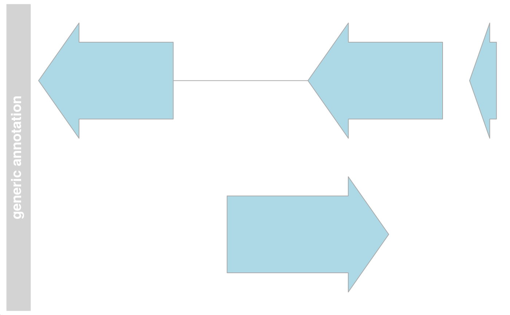

The virtual parent class for all track items in the Gviz package that contain some form of genomic ranges (start, end, strand, chromosome and the associated genome.)
# S4 method for RangeTrack
initialize(.Object, range, chromosome, genome, ...)
# S4 method for RangeTrack
ranges(x)
# S4 method for RangeTrack
range(x)
# S4 method for RangeTrack
seqnames(x)
# S4 method for RangeTrack
seqlevels(x)
# S4 method for RangeTrack
seqinfo(x)
# S4 method for RangeTrack
genome(x)
# S4 method for RangeTrack
genome(x) <- value
# S4 method for RangeTrack
chromosome(GdObject)
# S4 method for RangeTrack
chromosome(GdObject) <- value
# S4 method for RangeTrack
start(x)
# S4 method for RangeTrack
start(x) <- value
# S4 method for RangeTrack
end(x)
# S4 method for RangeTrack
end(x) <- value
# S4 method for RangeTrack
width(x)
# S4 method for RangeTrack
width(x) <- value
# S4 method for RangeTrack
min(x)
# S4 method for RangeTrack
max(x)
# S4 method for RangeTrack
length(x)
# S4 method for RangeTrack
strand(x)
# S4 method for RangeTrack,ANY
strand(x) <- value
# S4 method for RangeTrack
position(GdObject, from = NULL, to = NULL, sort = FALSE, ...)
# S4 method for RangeTrack,ANY,ANY,ANY
[(x, i, j, ..., drop = TRUE)
# S4 method for RangeTrack
subset(
x,
from = NULL,
to = NULL,
sort = FALSE,
drop = TRUE,
use.defaults = TRUE,
...
)
# S4 method for RangeTrack,ANY
split(x, f, drop = FALSE, ...)
# S4 method for RangeTrack
values(x)
# S4 method for RangeTrack
feature(GdObject)
# S4 method for RangeTrack,character
feature(GdObject) <- value
# S4 method for RangeTrack
consolidateTrack(GdObject, chromosome, ...).Object
range
the currently active chromosome which may have to be set
for a RangeTrack or a SequenceTrack object
parameters
genome
Additional arguments.
A valid track object class name, or the object itself, in which case the class is derived directly from it.
Value to be set.
the input track object
Numeric scalar, giving the range of genomic coordinates to
limit the tracks in. Note that to cannot be larger than from.
logical.
Numeric scalar, index to subset.
Numeric scalar, index to subset. Ignored.
logical, indicating if levels that do not occur should be dropped (if f is a factor).
logical.
factor in the sense that as.factor(f) defines the grouping,
A virtual class: No objects may be created from it.
initialize(RangeTrack): Initialize.
ranges(RangeTrack): return the genomic coordinates for the track
along with all additional annotation information as an object of
class GRanges.
range(RangeTrack): return the genomic coordinates for the
track as an object of class IRanges.
seqnames(RangeTrack): return the track's seqnames.
seqlevels(RangeTrack): return the track's seqlevels.
seqinfo(RangeTrack): return the track's seqinfo.
genome(RangeTrack): return the track's genome.
genome(RangeTrack) <- value: set the track's genome. Usually this has to
be a valid UCSC identifier, however this is not formally enforced here.
chromosome(RangeTrack): return the chromosome for which the track is defined.
chromosome(RangeTrack) <- value: replace the value of the track's chromosome.
This has to be a valid UCSC chromosome identifier or an integer or character
scalar that can be reasonably coerced into one.
start(RangeTrack): the start of the track items in genomic
coordinates.
start(RangeTrack) <- value: replace the start of the track items in
genomic coordinates.
end(RangeTrack): the end of the track items in genomic
coordinates.
end(RangeTrack) <- value: replace the end of the track items in
genomic coordinates.
width(RangeTrack): the width of the track items in genomic
coordinates.
width(RangeTrack) <- value: replace the width of the track items in genomic
coordinates.
min(RangeTrack): return the start position for the leftmost range item.
max(RangeTrack): return the end position for the rightmost range item.
length(RangeTrack): return the number of items in the track.
strand(RangeTrack): return a vector of strand specifiers for all
track items, in the form '+' for the Watson strand, '-' for the Crick
strand or '*' for either of the two.
strand(x = RangeTrack) <- value: replace the strand information for the track
items. The replacement value needs to be an appropriate scalar or vector
of strand values.
position(RangeTrack): the arithmetic mean of the track item's
coordionates, i.e., (end(obj)-start(obj))/2.
x[i: subset the items in the RangeTrack object.
This is essentially similar to subsetting of the GRanges object in the
range slot. For most applications, the subset method may be more appropriate.
subset(RangeTrack): subset a RangeTrack by coordinates and
sort if necessary.
split(x = RangeTrack, f = ANY): split a RangeTrack object by an appropriate
factor vector (or another vector that can be coerced into one). The output
of this operation is a list of objects of the same class as the input
object, all inheriting from class RangeTrack.
values(RangeTrack): return all additional annotation information
except for the genomic coordinates for the track items as a data.frame.
feature(RangeTrack): return the grouping information for track
items. For certain sub-classes, groups may be indicated by different colour
schemes when plotting. See grouping or AnnotationTrack and
GeneRegionTrack for details.
@export
feature(GdObject = RangeTrack) <- value: set the grouping information for track items.
This has to be a factor vector (or another type of vector that can be
coerced into one) of the same length as the number of items in the
RangeTrack. See grouping or AnnotationTrack and GeneRegionTrack for
details.
@export
consolidateTrack(RangeTrack): Consolidate.
dpObject of DisplayPars-class, the display settings controlling the
look and feel of a track. See settings for details on setting graphical
parameters for tracks.
nameObject of class character, a human-readable name for the track
that will be used in the track's annotation panel if necessary.
imageMapObject of ImageMap-class, containing optional information
for an HTML image map. This will be created by the drawGD methods when the
track is plotted to a device and is usually not set by the user.
rangeObject of class GRanges, the genomic ranges of the track items
as well as additional annotation information in its elementMetaData slot.
Please not that the slot is actually implemented as a class union between
GRanges and IRanges to increase efficiency, for instance for DataTrack
objects. This usually does not concern the user.
chromosomeObject of class character, the chromosome on which the
track is defined. There can only be a single chromosome for one track. For
certain subclasses, the space of allowed chromosome names is limited (e.g.,
only those chromosomes that exist for a particular genome). Throughout the
package, chromosome name have to be entered either as a single integer scalar
or as a character scalar of the form chrXYZ, where XYZ may be an arbitrary
character string.
genomeObject of class character, the genome for which the track is
defined. For most sub-classes this has to be valid UCSC genome identifier,
however this may not always be formally checked upon object instantiation.
## This is a reference class therefore we show below
## an example from AnnotationTrack
## An empty object
AnnotationTrack()
#> AnnotationTrack 'AnnotationTrack'
#> | genome: NA
#> | active chromosome: chrNA
#> | annotation features: 0
## Construct from individual arguments
st <- c(2000000, 2070000, 2100000, 2160000)
ed <- c(2050000, 2130000, 2150000, 2170000)
str <- c("-", "+", "-", "-")
gr <- c("Group1", "Group2", "Group1", "Group3")
annTrack <- AnnotationTrack(
start = st, end = ed, strand = str, chromosome = 7,
genome = "hg19", feature = "test", group = gr,
id = paste("annTrack item", 1:4),
name = "generic annotation", stacking = "squish"
)
# \dontshow{
## For some annoying reason the postscript device does not know about
## the sans font
if (!interactive()) {
font <- ps.options()$family
displayPars(annTrack) <- list(fontfamily = font, fontfamily.title = font)
}
# }
## Plotting
plotTracks(annTrack)
